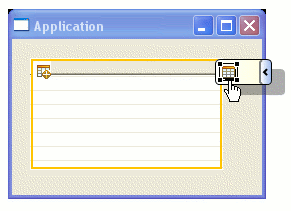
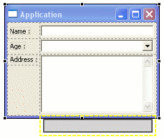

|
Support
for Eclipse 3.2
|
The Visual Editor
is now
compatible with Eclipse
3.2 M4, GEF 3.2 and EMF 2.2.
|
|
|
Ability
to create and edit JFace viewers
|
The
Visual Editor can now be used to create and edit JFace viewers.
Specifically the JFace TableViewer,
TreeViewer and the ComboViewer.
Brand new viewers can be dropped, or existing controls converted to use
them.

The Visual Editor handles a variety of viewer source patterns like :
1. Completely implicit control
2. Explicit usage of the implicit control
3. Completely explicit control wrapped by a viewer
In the case of the completely explicit control, removal of the viewer
does not remove the control. [112335]
|
|
| Enhanced
SWT Gridlayout |
The Visual Editor has a
vastly
improved SWT Gridlayout mechanism which behaves more like laying out a
table and thus making it much more intuitive. [116540,
119674]
The improved layout feedback will allow one to easily to
Add a Row
|
|
Add a Column
|
|
Add a single cell
Column
|
|
Insert into a
blank cell
|

|
Append a Row
|

|
Append a Column
|
|
|
|
Support for Mac OSX
|
The Visual Editor now supports
the creation and editing of SWT files on Mac OSX. [47716]
|
|
Default layout for controls
|
The Visual Editor now allows one
to choose a default layout for containers through the preference page.
The default layout is GridBagLayout for
Swing, and GridLayout for
SWT components. [110145,
111671]
Layouts for Swing containers:
Layout for SWT containers:
Also the layout can now be changed from a drop-down menu under the
customize layout action in the toolbar. [111670]
|
|
Caret location selects graphical components
|
The Visual Editor now
continuously tracks the location of the caret in the source, and
automatically selects a graphical component on whose variable name or
return method the caret is on. [113572]
This behavior can be turned off by unchecking the synchronize toggle in
the Java Beans view
Or by unchecking in the Visual Editor's preference page

|
|
Support for SWT TreeColumn
|
The Visual Editor now supports
the use of SWT TreeColumns. [111624]
An entry exists in the palette for dropping a TreeColumn on a Tree.
|
|
Ability to drop abstract Classes and
Interfaces
|
The Visual Editor's ChooseBean
Dialog now allows one to drop abstract
Classes and Interfaces. This allows a user to
easily extend such a bean, or select such a property if they choose. [113298]
|
|
Improved New Java Visual Class wizard
|
The Visual Editor's New Java Visual Class wizard now
has categories for SWT and RCP styles. [100145]
|
|
Increased delay when working with source
|
The Visual Editor has now
increased by a magnitude of four, the delay it takes to kickstart
processing the changes made in source, when working with the source
view maximized. [111777]
This happens when one is working with the source section maximized in
the split pane mode
and when in the seperate notebook tabs mode

|
|
AWT/Swing parent selection
|
The Visual Editor now provides
for the selection of an appropriate parent when dropping Dialog,
JDialog, Window or JWindow onto the freeform area. [112354]
When such a component is dropped on the freeform area, a dialog pops up
providing valid parents.
|
|
Developers: Internal API cleanup
|
The Visual Editor has cleaned up
usage of other component's internal APIs. This results in a much more
stable implementation which others can reliably extend on. [109390,
109310,
107627,
109306,
109305]
|
|
Developers: VE Model XMI View
|
The Visual Editor now provides a
helpful VE Model view which shows in XMI the EMF model of the file
currently being edited. [111668]
The view can be seen under the Visual
Editor category
Once shown, one can see the helpful XMI view of the EMF model which can
be used for debugging.
|